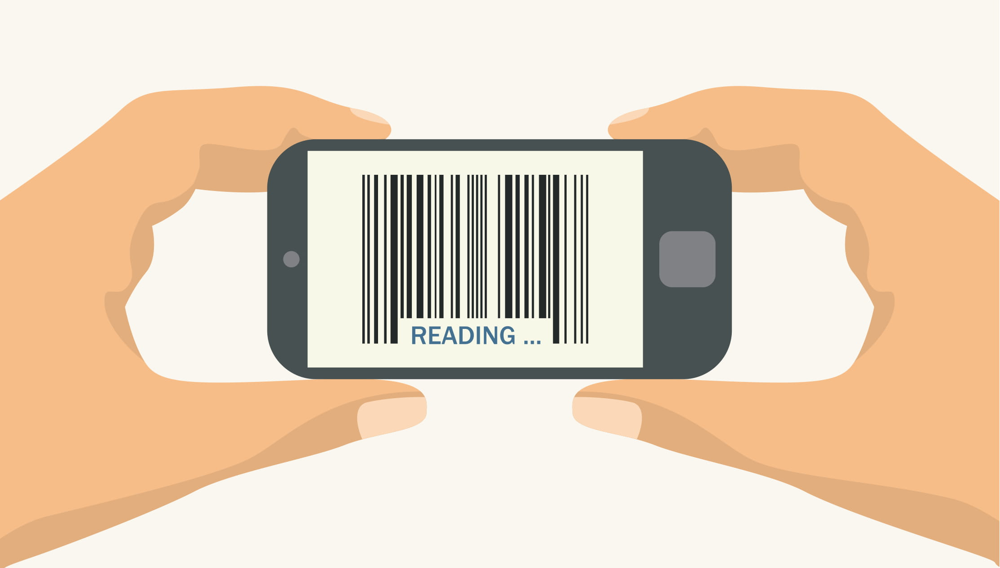

SustainLabel aims to address the global challenge by providing a learning tool to smartphone and internet users. SustainLabel will inform consumers about the environmental impact of products they buy, highlighting the real-world consequences of consumption. People can get involved by downloading our mobile app, which can be used while shopping to help inform consumer choices by scanning a product’s Universal Product Code (UPC) barcode. The app will read the barcode, and render information on its sustainability performance (including estimated carbon footprint), providing a “traffic-light” rating system, what the product’s ecolabel stands for and how it helps address sustainability challenges.
After the launch, future developments of SustainLabel would include integrating a map which shows local businesses selling locally-sourced goods and retailers providing environmentally friendly options such as shampoo bars and bamboo toothbrushes. Additionally, if a product is scanned and the barcode is not recognised, the app will notify SustainLabel and the product will be added to the system - ensuring that more products are covered. Moreover, consumers could provide feedback on certain products/labels, integrating user-input feedback and ratings, with a user-friendly traffic-light or five-star rating scheme. Incentives such as “sustainability tracking” could also feature in the app, encouraging consumers to purchase sustainably by learning more about how their purchases are making a difference.


The relevance and growing societal awareness of the environmental crisis is driving people to demand more information about the choices we make as consumers. This means that the feasibility of this project is strong, and people will be willing to use an app to learn more. If we tackle consumption and production patterns starting with the consumer, the production chain downstream will be positively affected, decreasing the use of unsustainable materials and inefficient energy use and reducing waste generated.